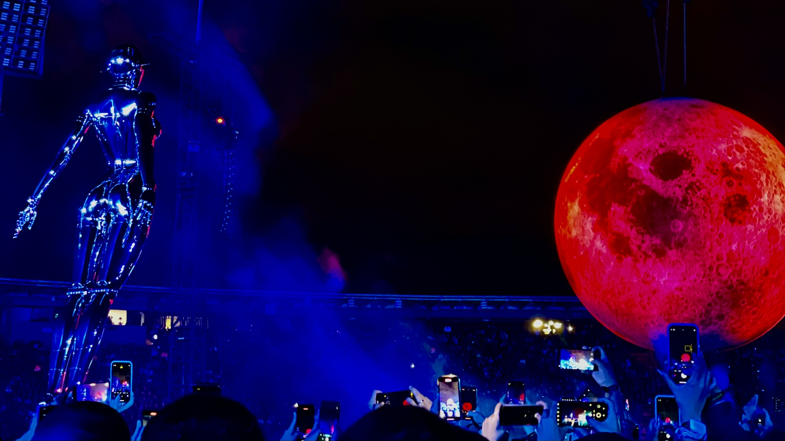
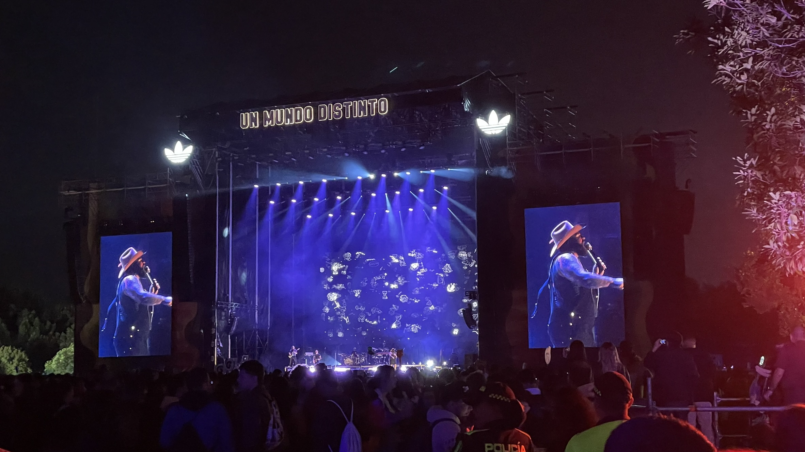

Música, Festivales y Conciertos 🎶🎤
La magia de los conciertos
Disfruto la energía de los conciertos en vivo, el ambiente de los festivales y la conexión que la música crea entre las personas. Cada presentación es una experiencia única que combina luces, sonidos y emociones.
Festivales
Los festivales son mi espacio favorito para descubrir nuevos artistas, compartir con amigos y celebrar la cultura musical. Me apasiona sentir el ritmo y la alegría de cada evento.
Video de un festival

Más sobre la música
Si quieres leer más sobre festivales y conciertos, visita: Festivales.